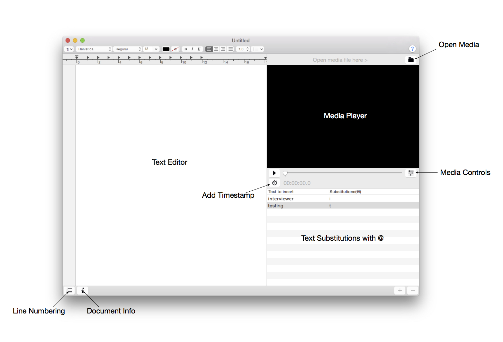

Loading Media Files
Press the -symbol to load audio- or video material from a file.
Tick the box in the "Preferences"-Pane to attach the current media file URL to the text file. (It is saved to the RTF comment attribute and loaded from there on opening the RTF file.)
Setting Timestamps
Press the -symbol to set a timestamp.
Media Controls
Press the -symbol to open the media control panel.
Media Shortcuts
Customize shortcuts in the "Preferences"-Pane
The f-pro footswitch by audiotranskription.de uses these settings:
RePLAY = Control + 1
STOP = Control + 2
Text Substitution
Insert the @-symbol followed by the keyword specified in the "Substitutions(@)"-table-cell in the textview for text-substitution.
Document Attributes
Open the -sheet to set document attributes.